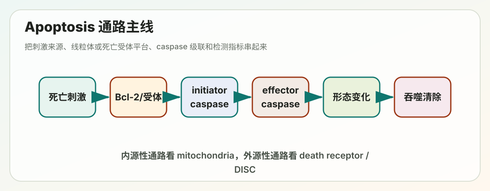

Lecture 16
Lecture 16: Apoptosis（细胞凋亡）

> 覆盖范围：programmed cell death、apoptosis identification、caspase cascade、intrinsic pathway、extrinsic pathway、DNA damage response、Bcl-2 family、other programmed cell death pathways。 > 复习目标：能从“死亡刺激 -> 信号通路 -> 执行分子 -> 形态变化 -> 检测方法”完整解释 apoptosis。
---
本讲主线
多细胞生物不仅需要控制细胞增殖，也必须控制细胞死亡。Apoptosis 是最经典的 programmed cell death，它让细胞以有序、可控、低炎症的方式被清除。
一句话框架：
发育或损伤信号
-> 细胞判断是否应该死亡
-> initiator caspases 被激活
-> effector caspases 切割大量底物
-> 细胞皱缩、染色质凝缩、DNA 断裂、膜起泡
-> apoptotic bodies 被吞噬细胞清除Apoptosis 的关键不是“细胞坏掉了”，而是“细胞主动执行了一套死亡程序”。
---
考前速记版
| 问题 | 核心答案 |
|---|---|
| Apoptosis 的形态特征 | cell shrinkage、chromatin condensation、membrane blebbing、DNA fragmentation、apoptotic bodies、phagocytosis |
| 主要执行分子 | caspases，尤其是 caspase-3/7 |
| 外源性通路 | death receptor -> FADD / DISC -> caspase-8 -> caspase-3 |
| 内源性通路 | mitochondrial stress -> Bax/Bak -> cytochrome c -> Apaf-1 apoptosome -> caspase-9 -> caspase-3 |
| 抗凋亡分子 | Bcl-2、Bcl-xL、IAPs |
| 促凋亡分子 | BH3-only proteins、Bax、Bak、Smac/DIABLO |
| DNA damage 如何连接凋亡 | p53 激活 p21 造成 arrest；损伤严重时激活 Puma/Noxa/Bax 推动 apoptosis |
| 检测 apoptosis | Annexin V、TUNEL、DNA ladder、cleaved caspase/PARP、形态观察、flow cytometry |
---
I. Programmed cell death 概述
1.1 为什么细胞死亡也要被调控
如果细胞只会增殖不会死亡，多细胞生物无法维持组织大小，也无法完成发育塑形。受控死亡有几类重要作用：
- 发育塑形：例如手指之间的组织被清除，形成分开的手指。
- 组织稳态：肠上皮、血细胞、免疫细胞不断更新，需要旧细胞被清除。
- 免疫系统选择：自身反应性淋巴细胞需要被删除，避免自身免疫。
- 清除危险细胞：DNA 严重损伤、病毒感染或癌变风险高的细胞会被诱导死亡。
- 变态发育和组织重塑：例如蝌蚪尾巴退化、昆虫变态。
所以 apoptosis 是“生命系统为了整体利益牺牲单个细胞”的机制。
1.2 Apoptosis vs Necrosis
| 对比 | Apoptosis | Necrosis |
|---|---|---|
| 性质 | 主动、程序化 | 常由外伤、缺血、毒性导致 |
| 能量需求 | 需要 ATP 和酶级联 | 常伴随能量崩溃 |
| 细胞体积 | 皱缩 | 肿胀 |
| 细胞膜 | 早期完整，后期形成 apoptotic bodies | 破裂 |
| DNA | 有规律片段化 | 随机降解 |
| 炎症 | 通常低炎症 | 常引发炎症 |
| 清除方式 | 被吞噬细胞识别和吞噬 | 内容物泄漏 |
这张表常用于解释为什么 apoptosis 适合发育和组织稳态：它不会把细胞内容物乱撒到组织里。
1.3 Apoptosis 的形态特征
典型 apoptosis 会看到：
1. 细胞变圆、体积缩小。 2. 染色质凝缩并贴近核膜。 3. 细胞膜出现 blebbing，但膜完整性早期仍保留。 4. DNA 被切成片段。 5. 细胞裂解成 apoptotic bodies。 6. 细胞表面暴露 phosphatidylserine，被巨噬细胞或邻近细胞吞噬。
注意：apoptosis 早期膜没有直接破裂，因此不会像坏死那样强烈诱发炎症。
---
II. 如何识别 apoptosis
2.1 形态学观察
显微镜下可以观察：
- cell shrinkage。
- chromatin condensation。
- membrane blebbing。
- apoptotic bodies。
优点是直观；缺点是主观性强，通常需要和分子检测配合。
2.2 Annexin V 检测 phosphatidylserine 外翻
正常细胞中 phosphatidylserine 主要在质膜胞质侧。Apoptosis 早期，phosphatidylserine 会外翻到细胞外侧。
Annexin V 能结合外翻的 phosphatidylserine，因此常用于早期 apoptosis 检测。
常见组合：
| 染色结果 | 解释 |
|---|---|
| Annexin V negative / PI negative | 活细胞 |
| Annexin V positive / PI negative | 早期 apoptosis |
| Annexin V positive / PI positive | 晚期 apoptosis 或继发性坏死 |
| Annexin V negative / PI positive | 原发性坏死或膜损伤 |
PI 只能进入膜完整性受损的细胞，因此用来判断膜是否已经破裂。
2.3 DNA fragmentation 和 TUNEL
Apoptosis 中 caspase 会激活核酸酶，使 DNA 在核小体之间断裂，形成约 180 bp 倍数的片段。
检测方法：
- DNA ladder：电泳看到梯状条带。
- TUNEL assay：标记 DNA 断裂产生的 3'-OH 末端。
注意：TUNEL 阳性说明 DNA 有断裂，但不一定只来自 apoptosis，解释时要结合形态和 caspase 活化。
2.4 Caspase activation 和底物切割
Apoptosis 的分子标志包括：
- cleaved caspase-3。
- cleaved caspase-8 或 caspase-9。
- cleaved PARP。
- cytochrome c 从 mitochondria 释放到 cytosol。
这些指标更接近通路本身，因此常用于 western blot、免疫荧光或流式检测。
2.5 检测题答法
如果题目问“如何证明细胞发生 apoptosis”，不要只写一个实验。更稳的答案是：
形态学观察
+ Annexin V/PI 判断早晚期
+ cleaved caspase-3 或 cleaved PARP 证明执行级联
+ TUNEL 或 DNA ladder 检测 DNA fragmentation这样能同时覆盖形态、膜变化、酶活化和 DNA 变化。
---
III. Caspases：apoptosis 的执行机器
3.1 Caspase 是什么
Caspase 全称是 cysteine-aspartic protease：
- 活性位点含 cysteine。
- 在底物 aspartic acid 后切割。
- 通常以前体 procaspase 形式存在。
- 通过切割激活，形成级联放大。
Caspase 分两类：
| 类型 | 例子 | 功能 |
|---|---|---|
| Initiator caspases | caspase-8、caspase-9 | 接收死亡信号，启动级联 |
| Effector caspases | caspase-3、caspase-6、caspase-7 | 切割结构和调控蛋白，执行细胞拆解 |
3.2 为什么 caspase 级联适合做死亡开关
Apoptosis 必须具有两个特性：
1. 平时不能误触发：否则正常细胞会被杀死。 2. 一旦触发要快速、不可逆：否则危险细胞可能逃脱。
Caspase 级联正好满足这两点。initiator caspase 需要在特定平台上聚集才激活，而 effector caspase 一旦被激活，会切割大量底物，迅速产生形态改变。
3.3 Effector caspase 的主要底物
Caspase-3/7 会切割多类蛋白：
- nuclear lamins：导致核膜结构解体。
- ICAD：释放 CAD nuclease，导致 DNA fragmentation。
- cytoskeletal proteins：导致细胞形态改变和 membrane blebbing。
- PARP：阻断 DNA 修复和能量消耗。
这解释了为什么 caspase 活化能同时造成核变化、DNA 断裂、细胞形态变化。
---
IV. 内源性 apoptosis pathway：线粒体通路
4.1 什么时候走内源性通路
内源性通路通常由细胞内部压力触发：
- DNA damage。
- 生长因子缺失。
- ER stress。
- oxidative stress。
- oncogene activation。
- 细胞周期检查点无法修复的损伤。
核心判断是：这个细胞是否还值得保留。如果损伤太严重，线粒体通路会把细胞推向死亡。
4.2 Bcl-2 family 的三类成员
Bcl-2 family 控制 mitochondrial outer membrane permeabilization，简称 MOMP。
| 类型 | 例子 | 作用 |
|---|---|---|
| Anti-apoptotic | Bcl-2、Bcl-xL、Mcl-1 | 抑制 Bax/Bak，保护线粒体 |
| Pro-apoptotic effector | Bax、Bak | 在外膜聚集成孔，导致 MOMP |
| BH3-only proteins | Bid、Bim、Puma、Noxa、Bad | 感受压力，解除抑制或直接激活 Bax/Bak |
记忆方式：
Bcl-2 / Bcl-xL = 刹车
Bax / Bak = 打孔机器
BH3-only = 压力传感器和刹车解除器4.3 MOMP 和 cytochrome c 释放
当 Bax/Bak 被激活后，会在线粒体外膜形成孔，造成 MOMP。随后：
1. cytochrome c 从线粒体膜间隙释放到 cytosol。 2. cytochrome c 结合 Apaf-1。 3. Apaf-1 在 dATP/ATP 参与下组装成 apoptosome。 4. apoptosome 招募并激活 procaspase-9。 5. caspase-9 激活 caspase-3/7。 6. 细胞进入执行阶段。
4.4 IAP 和 Smac/DIABLO
细胞还有一层刹车系统：
- IAPs 可以抑制 caspases。
- 线粒体释放的 Smac/DIABLO 可以抑制 IAPs，从而解除对 caspase 的抑制。
因此线粒体不仅释放 cytochrome c 启动 apoptosome，也释放 Smac/DIABLO 来移除 caspase 刹车。
---
V. 外源性 apoptosis pathway：死亡受体通路
5.1 Death receptors
外源性通路由细胞外死亡信号触发，典型受体属于 TNF receptor family。
常见组合：
| Ligand | Receptor |
|---|---|
| Fas ligand | Fas / CD95 |
| TNF-alpha | TNF receptor |
| TRAIL | TRAIL receptor |
这些受体胞内有 death domain，能招募 adaptor proteins 形成信号平台。
5.2 DISC 和 caspase-8
典型 Fas 通路：
FasL 结合 Fas
-> receptor trimerization
-> FADD 招募
-> procaspase-8 聚集
-> DISC 形成
-> caspase-8 激活
-> caspase-3/7 激活
-> apoptosisDISC 是 death-inducing signaling complex。initiator procaspase-8 在 DISC 上靠近彼此，通过 proximity-induced activation 被激活。
5.3 外源性和内源性的连接：Bid
Caspase-8 不只可以直接激活 caspase-3，还能切割 Bid 形成 tBid。tBid 会进入线粒体，促进 Bax/Bak 活化，引发 MOMP。
这说明两条通路不是完全独立的：
death receptor
-> caspase-8
-> tBid
-> Bax/Bak
-> mitochondrial pathway---
VI. DNA damage response 与 apoptosis
6.1 损伤后细胞有两个选择
DNA damage 后，细胞不会立刻死亡，而是先判断损伤程度。
轻中度损伤：
ATM/ATR activation
-> Chk1/Chk2
-> p53 stabilization
-> p21 expression
-> cell cycle arrest
-> DNA repair严重或不可修复损伤：
p53
-> Puma / Noxa / Bax 等促凋亡基因
-> Bax/Bak activation
-> MOMP
-> apoptosis因此 p53 的核心功能不是“直接杀细胞”，而是作为 damage response 的决策节点：能修就停下来修，不能修就让细胞死亡。
6.2 为什么 apoptosis 能抑制癌症
癌变细胞常有 DNA damage、oncogene activation 或染色体异常。正常情况下，这些压力会激活 p53 和 apoptosis，把危险细胞清除。
肿瘤细胞常通过以下方式逃避：
- p53 失活。
- Bcl-2 或 Bcl-xL 过表达。
- Bax/Bak 功能降低。
- death receptor pathway 被抑制。
- IAPs 上调。
所以“抗凋亡”是癌症获得生存优势的重要方式。
---
VII. 其他 programmed cell death pathways
Apoptosis 不是唯一的程序性细胞死亡。不同死亡方式有不同形态、分子标志和生理意义。
7.1 Necroptosis
Necroptosis 是程序化坏死，常在 caspase-8 被抑制时发生。
核心分子：
- RIPK1。
- RIPK3。
- MLKL。
基本过程：
TNF 等信号
-> RIPK1/RIPK3 复合体
-> MLKL 磷酸化和寡聚化
-> 破坏质膜完整性
-> 细胞肿胀破裂
-> 炎症反应形态上更像 necrosis，但它是受调控的。
7.2 Pyroptosis
Pyroptosis 是炎症性程序死亡，常见于感染和 innate immunity。
核心分子：
- inflammasome。
- caspase-1 或 caspase-4/5/11。
- gasdermin D。
- IL-1beta、IL-18。
机制：
病原或危险信号
-> inflammasome 激活
-> caspase-1 激活
-> gasdermin D 被切割
-> N端片段在膜上成孔
-> 细胞裂解并释放炎症因子7.3 Ferroptosis
Ferroptosis 是铁依赖的脂质过氧化相关死亡。
核心关键词：
- Fe2+。
- lipid ROS。
- GPX4。
- glutathione。
- system Xc-。
当 GPX4 功能不足或谷胱甘肽耗竭时，脂质过氧化无法被清除，膜脂损伤积累，细胞死亡。
7.4 Autophagy-dependent cell death
Autophagy 本来是细胞在营养压力下回收物质、维持生存的机制。但在某些情境下，过度或特定形式的 autophagy 会参与细胞死亡。
复习时要小心：看到 autophagy 增加，不等于一定是 autophagy 导致死亡；它也可能是细胞自救反应。
---
常考比较
Intrinsic vs Extrinsic apoptosis
| 对比 | Intrinsic pathway | Extrinsic pathway |
|---|---|---|
| 触发 | DNA damage、生长因子缺失、ER stress、氧化压力 | FasL、TNF、TRAIL 等外部死亡信号 |
| 关键平台 | mitochondria / apoptosome | death receptor / DISC |
| initiator caspase | caspase-9 | caspase-8 |
| 核心调控 | Bcl-2 family | receptor-adaptor complex |
| 交叉点 | Bax/Bak、cytochrome c | caspase-8 可切 Bid 进入线粒体通路 |
Apoptosis vs Necroptosis vs Pyroptosis
| 类型 | 膜完整性 | 炎症 | 关键分子 |
|---|---|---|---|
| Apoptosis | 早期完整 | 低 | caspase-3/7、Bcl-2 family |
| Necroptosis | 破裂 | 高 | RIPK1/RIPK3/MLKL |
| Pyroptosis | 成孔破裂 | 高 | inflammasome、caspase-1、gasdermin |
Bcl-2 family 答题套路
压力信号激活 BH3-only proteins
-> 抑制 Bcl-2/Bcl-xL 或直接激活 Bax/Bak
-> Bax/Bak 在 mitochondrial outer membrane 聚集
-> cytochrome c 释放
-> apoptosome
-> caspase-9
-> caspase-3/7
-> apoptosis---
疾病联系
Apoptosis 不足
如果 apoptosis 不足，危险或不该存在的细胞会存活。
典型后果：
- 癌症。
- 自身免疫。
- 病毒感染细胞逃避免疫清除。
癌症中常见策略包括 p53 失活、Bcl-2 上调、IAP 上调、death receptor signaling 降低。
Apoptosis 过度
如果 apoptosis 过度，正常细胞被过多清除。
可能相关：
- 神经退行性疾病。
- 缺血再灌注损伤。
- 免疫细胞耗竭。
- 某些组织萎缩。
---
自测题
1. 为什么 apoptosis 通常不会引起强烈炎症？ 2. Annexin V positive / PI negative 代表什么阶段？为什么？ 3. 解释 cytochrome c、Apaf-1、caspase-9 和 caspase-3 在内源性通路中的顺序。 4. Fas receptor 激活后如何形成 DISC？ 5. p53 如何在 cell cycle arrest 和 apoptosis 之间起决策作用？ 6. Bcl-2 过表达为什么能帮助肿瘤细胞存活？ 7. Necroptosis 和 pyroptosis 都会引发炎症，它们的核心执行分子分别是什么？
---
一页总结
Apoptosis 的本质是一套由 caspases 执行、由线粒体和死亡受体调控的细胞自杀程序。复习时始终按这条链条组织答案：刺激来源 -> initiator platform -> initiator caspase -> effector caspase -> 形态和生化变化 -> 检测方法 -> 生理或疾病意义。